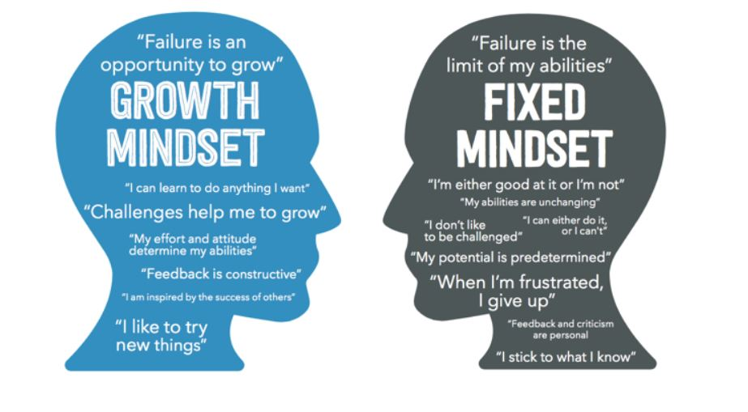

Neuroplasticity
Neuroplasticity is the brain's ability to reorganize itself by forming new neural connections throughout
life.
It is quite complex and includes several events occurring at molecular, synaptic and muscle
levels over short and long periods of time. But understanding how the brain works can benefit people in
different ways.
A neuron consists of a cell body (soma), a tail (axon) and branching (dendrites). When we learn, these
dendrites grow and connect with other neurons forming new pathways in the brain.
During infancy, the key to developing new connections is the surrounding environment,
which
relies on
sensory (visual, auditory, tactile, smell) and motor stimuli.
When we get older, we continue to have the ability to learn new activities, skills or languages.
But being able to retain those abilities depends on our behavior: nothing is more
effective
than practice in
learning and, according to Lara Boyd’s neuroscience, the bottom line is that we have to do the
work.
There is no recipe for learning: some people require more practice, other less; there
is no
a universal
principle that works for all people at all ages. Each brain is unique so we need to personalize our
learning.
“Study how and what you learn best. Repeat those behaviors that are healthy for your brain, and break those that are not. Practice. Learning is about doing the work that your brain requires. You and your plastic brain are constantly being shaped by the world around you. Everything you do, everything you encounter and everything you experience is changing your brain. And that can be for the better, but it can also be for the worse. Go out and build the brain you want”. - Lara Boyd
In the past scientists used to believe that the brain was hard-wired, in other words static, unchanging and locked. Nowadays we know that this is not true: without neuroplasticity, any brain, not just the human brain, would be unable to develop from infancy through to adulthood.
Benefits of Neuroplasticity:
- It allows the neurons (nerve cells) in the brain to compensate for injury and
disease
and to adjust
their activities in response to new situations or to changes in their environment.
For example, when one part of the brain is damaged, such as the area of the left hemisphere that controls speech, the right hemisphere of the brain may "pick up" some of the language abilities that were lost (Sanderson, 1991). - It slows down the aging process: as we age, the rate of change in the brain declines but it does not stop. Our brain can be maintained by a life of continual learning – older people have to keep challenging their brain in order to create new neural pathways.
- It can restore old, lost connections and functions that have not been used in some time.
- It can help to guide training programmes in sports activities which focus on the importance of teaching and refining good movements. In fact, to proficiently perform athletic movements the brain must coordinate with the necessary muscle groups to produce the action. If a bad movement pattern is performed repeatedly, the technique will require more practice and time to fix/refine.
Practicing and Improving Neuroplasticity in my life
I will definitely keep learning new things, as this is also one of the reasons why I am attending EDA,
and I
believe that setting new goals is the best way to achieve that, in order to keep my enthusiasm and my
motivation alive.
Another thing I will do is trying to increase the difficulty of a task or exercise in order to get out
of my
comfort zone, because only in this way the brain turns on and changes its pathways.
I'll take a cue from one of Dr. Don Elger's classes where he teaches "how to learn" based on how the
brain
works.
I will increase my neuroplasticity in three ways:
- Repetition : repeating a pattern over and over until it gets easy, because that means that a neural connections have been formed.
- Practice correct fundamentals : whatever I practice becomes permanent, so I need to apply the learned concepts correctly every time in order to build correct knowledge.
- Learning in Authentic Environments : for example, while I am learning javascript, I could practice by applying the concepts into my blog.
Link to a resource that you found particularly useful or engaging.
Brain-based Learning Model
(Neuroplasticity)
After watching this, your brain will not be the
same | Lara Boyd | TEDxVancouver
Growth Mindset
One central concept from the book “Mindset: The New Psychology of Success” – by Carol Dweck - is that the view of yourself can determine the way you lead your life.
C. Dweck contrasts two mindsets:

Fixed Mindset
“Believing that your qualities are carved in stone — the fixed mindset — creates an urgency to prove
yourself over and over. If you only have a certain amount of intelligence, a certain personality,
and a certain moral character — well, then you’d better prove that you have a healthy dose of them.
It simply wouldn’t do to look deficient in these most basic characteristics.”
Growth Mindset
“In this mindset, the hand you’re dealt is just the starting point for development. This growth
mindset is based on the belief that your basic qualities are things you can cultivate through your
efforts. Although people may differ in every which way — in their initial talents and aptitudes,
interests, or temperaments — everyone can change and grow through application and
exercise.”
In simple words, Growth Mindset is the power of believing that you can improve or, as
Carol Dweck has
defined it, the power of “yet”.
It’s relevant because:
- It helps you focusing on what are you doing , and enjoying what you are learning despite the outcome;
- Improve Your Self-Insight and Self-Esteem;
- You don’t feel stupid, stressed or depressed when making errors: mistakes are not a failure, instead you can learn from them.As well, a setback is useful because provides a feedback and you can understand why something went wrong;
- Strengthen Your Confidence;
- It helps you to take responsibility for your actions and decisions because you don’t blame others for them.
Exploring Growth Mindset: how integrate it into my learning journey
While I was reading some articles on this topic, I found some examples of how a response to everyday
situations can turn out to be of the kind of growth mindset rather than fixed.
One of the examples was running late and missing the bus or car pool.
A fixed mindset response will be to grumble, curse and call yourself or someone else names and
then,
remain in a foul mood for the rest of the day.
A growth mindset response will be to decide to go to bed earlier, set an alarm and lay out the
clothes
in the evening itself, so that tomorrow can be better and different.
So I found myself thinking of some situations that happened in my everyday life and how I
reacted/behaved in a particular circumstance to see which kind of mindset I have.
I've noticed that every time I had to deal with something new, whether it's solving a javascript
problem or trying a harder route with top roping, my first thought is "I can't do it, it's too
difficult",
although I find new challenges very stimulating. Unfortunately, in this case I have more a fixed
mindset.
Understanding this made me realize that I need to change approach, so I will try to integrate Growth
Mindset in my learning journey and in my life in general.
I will try to believe more in myself, in my own skills and abilities, simply by thinking “Yes, I can do
it”, instead of “it’s too difficult for me”.
I will value the learning process over the end result, by prioritizing quality more than quantity.
I will try to not be unmotivated by a failure but see it as a lesson, an opportunity to learn and
improve.